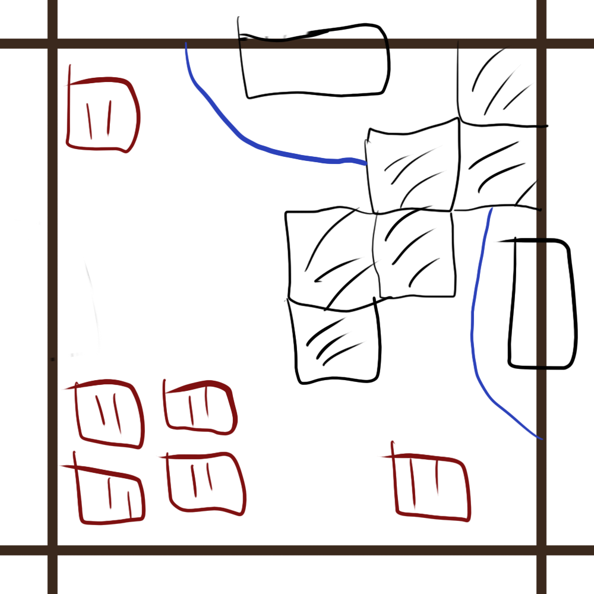
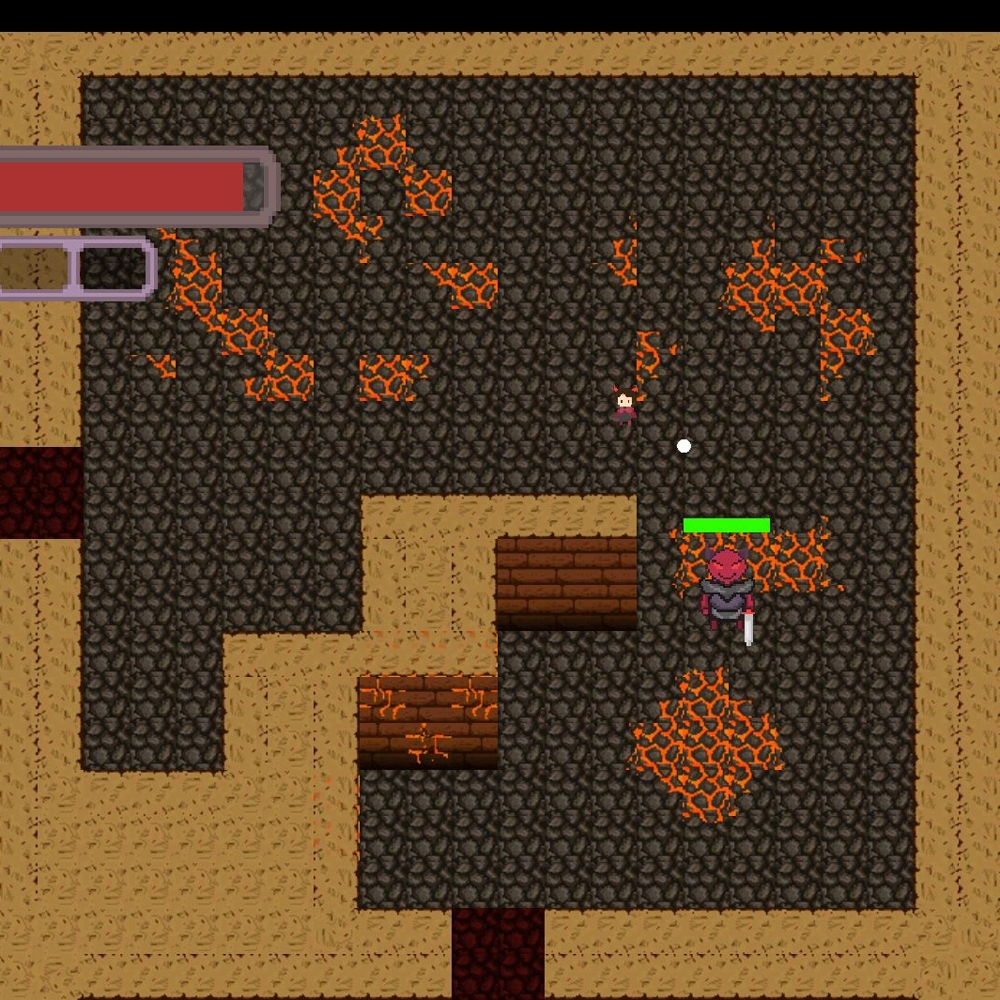

Hell Gene is a rogue-like hack and slash game made in a week for the Brackeys Gamejam 2021.2 with the theme of “Let there be chaos”
The player is a descendant of the Demon king and fights through hordes of enemies with a variety of devilish weapons and ever changing rooms of hell to reject their birthright.
The team’s goal for this game jam was to push the boundaries on a more technical front by having procedurally generated levels, multiple enemy types and a variety of fighting styles for players to use. Hell Gene was one of the greatest technical challenges we faced.
My role as project lead once again began way before the actual game jam began. Mostly by doing a more indepth recruitment process, finding people who were interested in working with some of the old team as well as finding people to recruit for the artist positions.
I really struggled with mostly finding the artists, I was able to find one but after our last game jam I had quickly realized we were going to need a larger team of artists. Especially since the one artist I did recruit didn’t feel the most comfortable with animating. So I had a discussion with the team about how we were going to need to either mix in some premade assets or we were going to have to simplify the idea.
Luckily this discussion opened the way for one of our programmers who felt comfortable animating so long as they had the basis of the character to animate from. This person also mentioned an artist friend they had who we also recruited to act as second to our main artist. Which had led to the resolution of our main problem of lacking artists.
My role as a level designer was a very insightful experience into the importance of level design within games. This was especially true as I had to design around the consideration of procedural generation. I knew I had to narrow my scope right away, making the rooms square so that they could be randomly assembled easily.
The second challenge came from, how do I make these square rooms unique and fun to play in. Which involved a lot of research into other rogue-likes room layouts and taking inspiration from them and making them at a smaller scale at times as well.
I generated around 20 unique layouts using Photoshop with various entrances and exits that I denoted in the names of them. In the layout sketches I denoted where enemies would spawn in from and where the walls and doors for the rooms would be.
Red squares are expected spawn locations for enemies in each room. The number of tallies represents either density of enemies or strength of enemies. The more tallies the more enemies/more powerful enemies are there, the less means either lesser numbers or weaker enemies. The max is five and lowest is 1.
After having a meeting and discussing whether we needed more designs we thought these ones to be fine for our timeframe. I then began to create prefabs of the individual rooms within Unity.
Since the game was top down I had two grids, a floor grid and wall grid, both with a tile map renderer and the walls had a tile map collider. This made it easy to avoid any gaps in the floor and made sure the falls looked flushed.
As a programmer for this project my objective was implementing pathfinding for the procedurally generated rooms. I used A* pathfinding as it was an easy way to implement pathfinding on the enemies so that they’d target and chase the player.
I created an A* object within unity and created a graph of the room as well as passing in the tile map renderer for the walls layer as an obstacle for the AI to avoid.
I wrote very simple template code for the team to understand so that everyone who was coding the logic of how the enemies fight could easily manipulate and understand how to adjust the A* pathfinding to their needs.
My secondary job as a programmer was being the one in charge of merging at the end of the day and making sure the main branch was never too outdated from any extra branches. As soon as I was given the go ahead by those working on the other branches, I would merge them and sort out any conflicts that might have appeared.
Since this was a way larger technical challenge than last time, I ended up having to sort out a few conflicts in merges however most of them I was able to resolve with minimal issue.
Hell Gene is a project I am very proud of but I also recognize it could have been so much more. We had overscopped massively as our first game jam filled us with a lot of false confidence and we were forced to cut a lot of cool content to make the deadline, however even with all of that, it still had good reception and proved that the work we put into the game was still of great quality and how to narrow the scope better for projects like this.